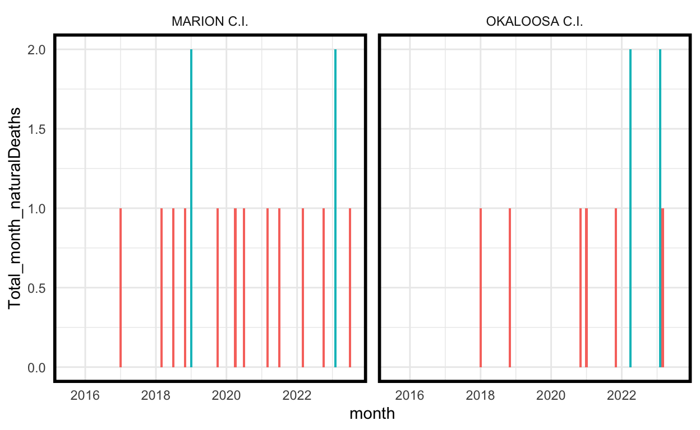

The Florida Department of Corrections hosts a webpage called Inmate Mortality on their website. This page lists all deaths that occurred throughout the department during the preceding fiscal year. The webpage provides data for fiscal years 2017-2018 up to the present and can be accessed at Inmate Mortality Florida Department of Corrections (myflorida.com).
Figure 1: Source: Screenshot 2023-09-04 at 11.27.33 AM | Florida Department of Corrections
Figure 2: Source: Screenshot 2023-09-04 at 11.34.04 AM | Florida Department of Corrections
It is remarkable and surprising that the FDOC chose to openly post this data (this point requires further support). In my data science training, however, I have learned that data is usually presented in this way only when there is a story to tell or a point to make. By presenting the data in this way, it becomes a communication tool, and one story in partiular has been intentionally centered here by the Florida Department of Corrections: the vast majority of deaths inside are natural, which is listed first under Mortality Facts and emphasized through the use of a pie chart. The third item in this list of facts serves to reinforce this point, and the table of the number of deaths separated by manner of death presented alongside this visual is used as an opportunity to juxtapose the total inmate population. The FDOCs story is clear: given such a large incarcerated population entering with pre-existing medical conditions, natural deaths are inevitable but slight in comparison to the total number of persons under their care.
On average, people should be more skeptical when they see numbers. They should be more willing to play around with the data themselves. Nate Silver, founder, and editor-in-chief of FiveThirtyEight.
Fortunately, in addition to these summary statistics, the FDOC also posts tables of deaths, and these raw data are quite informative.
Figure 3: Source: Screenshot 2023-09-04 at 12.20.33 PM | Florida Department of Corrections
This paper utilizes these lists for the fiscal years 2015 - present. Although the webpage itself only links to data tables going back to the FY 2017-2018, the FDOC has been publishing said tables since 2015, and links to the fiscal years 2015-16. and 2017-18 were made available to the author via a direct request to the FDOCs Department of Research and Data.
The Raw Data
While many records lack names and the manner of death, the FDOC data does contain 3,497 death observations, each of which is accompanied by a Date of Death. The earliest recorded date of death is July 2nd, 2015, and the latest is July 31st, 2023. To begin, I have compiled the data into a sortable and searchable data table.
Coding work and downloadable initial and intermediate data are visible under the toggle sections for each subtask:
-
Importing libraries, setting seed
-
Reading in csv files
You can download the initial csv files here: Download fdoc_mortality.zip.
# Here we are bringing in our csv files -- I copied and pasted the FDOC tables into spreadsheets and saved them # as csvs. The coordinates of FDOC facilities were manually looked up by me on Google maps. # base directory for CSV files base_dir <- "/Users/johnwise/pubic_repository/csvs/fdoc_mortality/" # Define a function to read and preprocess CSV files read_and_preprocess_csv <- function(file_path) { # Read the CSV file data <- read_csv(file_path, col_names = TRUE, skip = 1, show_col_types = FALSE) # Extract 'DC Number' using regular expression data$`DC Number` <- str_extract(data$`DC Number`, "(?<=DCNumber=)[^&]+") return(data) } # Read and preprocess CSV files for each fiscal year fy15 <- read_and_preprocess_csv(paste0(base_dir, "FY 2015-2016.csv")) fy16 <- read_and_preprocess_csv(paste0(base_dir, "FY 2016-2017.csv")) fy17 <- read_and_preprocess_csv(paste0(base_dir, "FY 2017-2018.csv")) fy18 <- read_and_preprocess_csv(paste0(base_dir, "FY 2018-2019.csv")) fy19 <- read_and_preprocess_csv(paste0(base_dir, "FY 2019-2020.csv")) fy20 <- read_and_preprocess_csv(paste0(base_dir, "FY 2020-2021.csv")) fy21 <- read_and_preprocess_csv(paste0(base_dir, "FY 2021-2022.csv")) fy22 <- read_and_preprocess_csv(paste0(base_dir, "FY 2022-2023.csv")) fy23 <- read_and_preprocess_csv(paste0(base_dir, "FY 2023-2024.csv")) # Brining in Facility coordinates, manually acquired (someone should double check these!) by the author cords <-read_csv(paste0(base_dir, 'facility_cords.csv')) -
Data cleaning
# Combine data frames from different fiscal years into one deaths <- rbind(fy15, fy16, fy17, fy18, fy19, fy20, fy21, fy22, fy23) # Remove individual fiscal year data frames to free up memory remove(fy15, fy16, fy17, fy18, fy19, fy20, fy21, fy22, fy23) # Rename columns for consistency and clarity colnames(deaths) <- c('Name', 'DCNumber', 'Date_Death', 'FACILITY_description', 'Manner_Death', 'Status') # Extract the first word from the 'Status' column deaths$Status <- str_extract(deaths$Status, "^\\S+") # Convert the 'Date_Death' column to Date format (assuming 'mdy' function from lubridate) deaths$Date_Death <- as.Date(mdy(deaths$Date_Death)) # Convert selected columns to factor variables for categorical data deaths$FACILITY_descriptionn <- as.factor(deaths$FACILITY_description) deaths$Manner_Death <- as.factor(deaths$Manner_Death) deaths$Status <- as.factor(deaths$Status) deaths$DCNumber <- as.factor(deaths$DCNumber) write_csv(deaths, 'deaths1.csv')You can download this cleaned data as a csv file here: Download deaths1.csv.
# Manner of Death Data Cleaning deaths$Manner_Death <- recode(deaths$Manner_Death, "Natrual" = "Natural") deaths$Manner_Death <- recode(deaths$Manner_Death, "CLOSED" = "Closed") deaths$Manner_Death <- recode(deaths$Manner_Death, "4Suicide" = "Suicide") deaths$Manner_Death <- recode(deaths$Manner_Death, "Acdident" = "Accident") # Facilities Data Cleaning deaths$FACILITY_description <- recode(deaths$FACILITY_description, "Apalachee East" = "APALACHEE EAST UNIT") deaths$FACILITY_description <- recode(deaths$FACILITY_description, "BAKER Re-Entry" = "BAKER RE-ENTRY CENTR") deaths$FACILITY_description <- recode(deaths$FACILITY_description, "Blackwater CF" = "BLACKWATER C.F.") deaths$FACILITY_description <- recode(deaths$FACILITY_description, "CFRC" = "CFRC-MAIN") deaths$FACILITY_description <- recode(deaths$FACILITY_description, "CFRC East" = "CFRC-EAST") deaths$FACILITY_description <- recode(deaths$FACILITY_description, "CFRC South" = "CFRC-SOUTH") deaths$FACILITY_description <- recode(deaths$FACILITY_description, "COLUMBIA C.I." = "COLUMBIA CI") deaths$FACILITY_description <- recode(deaths$FACILITY_description, "Charlotte" = "CHARLOTTE C.I.") deaths$FACILITY_description <- recode(deaths$FACILITY_description, "Cross City" = "CROSS CITY C.I.") deaths$FACILITY_description <- recode(deaths$FACILITY_description, "FSP West" = "FSP WEST UNIT") deaths$FACILITY_description <- recode(deaths$FACILITY_description, "Hamilton Annex" = "HAMILTON ANNEX") deaths$FACILITY_description <- recode(deaths$FACILITY_description, "Hardee" = "HARDEE C.I.") deaths$FACILITY_description <- recode(deaths$FACILITY_description, "Hardee Work Camp" = "HARDEE WORK CAMP") deaths$FACILITY_description <- recode(deaths$FACILITY_description, "LAKE CITY" = "LAKE CITY C.F.") deaths$FACILITY_description <- recode(deaths$FACILITY_description, "Lake" = "LAKE C.I.") deaths$FACILITY_description <- recode(deaths$FACILITY_description, "Marion" = "MARION C.I.") deaths$FACILITY_description <- recode(deaths$FACILITY_description, "Okeechobee" = "OKEECHOBEE C.I.") deaths$FACILITY_description <- recode(deaths$FACILITY_description, "RMC-Main Unit" = "R.M.C.- MAIN UNIT") deaths$FACILITY_description <- recode(deaths$FACILITY_description, "R.M.C.-MAIN UNIT" = "R.M.C.- MAIN UNIT") deaths$FACILITY_description <- recode(deaths$FACILITY_description, "S.F.R.C" = "S.F.R.C.") deaths$FACILITY_description <- recode(deaths$FACILITY_description, "S.F.R.C. SOUTH" = "S.F.R.C. SOUTH UNIT") deaths$FACILITY_description <- recode(deaths$FACILITY_description, "SFRC" = "S.F.R.C.") deaths$FACILITY_description <- recode(deaths$FACILITY_description, "SUMTER C.I." = "SUMTER C.I.") deaths$FACILITY_description <- recode(deaths$FACILITY_description, "Suwannee Annex" = "SUWANNEE C.I. ANNEX") deaths$FACILITY_description <- recode(deaths$FACILITY_description, "Taylor" = "TAYLOR C.I.") deaths$FACILITY_description <- recode(deaths$FACILITY_description, "Union" = "UNION C.I.") deaths$FACILITY_description <- recode(deaths$FACILITY_description, "Wakulla" = "WAKULLA C.I.") deaths$FACILITY_description <- recode(deaths$FACILITY_description, "Wakulla Annex" = "WAKULLA ANNEX") deaths$FACILITY_description <- recode(deaths$FACILITY_description, "Walton" = "WALTON C.I.") # there are three records for which the cause of death was determined to be 'Undetermined' and three records for #which this variable was valued as 'Closed'. This "Closed" is meant to be a category for investigative status, # so for the purposes of this investigation we collapse those categorized as "Closed" to be "Undetermined". deaths$Manner_Death <- recode(deaths$Manner_Death, "Closed" = "Undetermined") write_csv(deaths, 'deaths2.csv')You can download this cleaned data as a csv file here: Download deaths2.csv.
Show code
# Creating the table utilizing the data imported and cleaned above
facilities <- deaths %>%
group_by(FACILITY_description, Manner_Death) %>%
summarise(count = n()) %>%
pivot_wider(names_from = Manner_Death, values_from = count, values_fill = 0) %>%
mutate(total = sum(Natural,Suicide, Accident)) %>%
arrange(desc(total))
datatable(facilities, options = list(scrollX = TRUE, pageLength = 10, lengthMenu = c(10, 20, 50)))Show code
write_csv(facilities, 'facilities.csv')You can download this cleaned and aggregated data as an csv file here: Download facilities.csv.
Lake Butler Medical Reception Center
Upon initial examination of the data, it becomes apparent that the majority of deaths occur at the Reception and Medical Center (RMC) in Lake Butler, Florida. This is because the RMC is the secure medical facility for the entire Florida Department of Corrections, and includes a hospital on site where individuals in need of hospitalization or specialty medical care are housed. The facility was founded in 1968 as an intake and processing point for all male state prisoners and as a secure medical facility.
Show code
per_month_all2 <- deaths %>%
group_by(FACILITY_description, month = floor_date(Date_Death, unit = "month")) %>%
summarise(Total_month_Deaths = n()) %>%
mutate(Facility_obs_count = sum(Total_month_Deaths))
per_month_rmc_keyed <- per_month_all2 %>% mutate(RMC = FACILITY_description == 'R.M.C.- MAIN UNIT')
ggplot(per_month_rmc_keyed, aes(x = as.Date(month), y = Total_month_Deaths, fill = RMC)) +
geom_rect(aes(xmin = as.Date("2020-03-09"), xmax = as.Date("2021-08-25"), ymin = -Inf, ymax = Inf), fill = "lightpink", alpha = 0.3) +
geom_col() +
scale_x_date(date_labels = "%B, %Y", date_breaks = "6 months") +
theme(axis.text.x = element_text(angle = 90, hjust = 1)) +
coord_cartesian(xlim = as.Date(c("2015-07-02", "2023-06-29"))) +
xlab(NULL) +
ylab('Count') +
labs(fill = "", title = "Monthly FDOC Deaths -- RMC/Not-RMC:") +
theme(legend.position = "top",
legend.direction = "horizontal",
legend.key.width = unit(1, "cm"),
legend.text = element_text(size = 10),
legend.key = element_rect(fill = c("blue", "lightpink"), color = "gray")) +
scale_fill_manual(values = c("FALSE" = "blue", "TRUE" = "black"),
labels = c("Non Lake Butler RMC Death", "Lake Butler RMC Death")) +
annotate(geom="text", label='2020 COVID 19 Florida Emergency', x=as.Date('2020-12-09'), y=-1.75, size=2.5) +
labs(caption = "Figure 4")
The plot above displays the total number of deaths over time for the period covered by our data. It has been separated into Lake Butler and Non-Lake Butler deaths to better understand the contribution of deaths from Lake Butler and to highlight that the total number of deaths in the Florida Department of Corrections is largely determined by the frequency of deaths at Lake Butler RMC.
In my experience, Lake Butler, Florida is one of the most dangerous sites in the prison system in terms of assaults on the incarcerated population by staff. During my time incarcerated in Florida, I was personally housed at Lake Butler RMC on multiple occasions, due to the medical problems I experienced surrounding my food allergies while incarcerated, and I was there a total of about a year altogether. During that time, I personally witnessed many acts of violence and assault, most from staff members onto the incarcerated population, but equally as often did I see violence among the incarcerated population that was encouraged by a complicit staff.
For example, sometime around 2012, ten years into my sentence, I was sent back to Lake Butler RMC from my facility and was housed at the main unit in I Block for four months. This building was constructed shortly after the facility was opened. When I first entered the building with my property, I climbed a dark set of stairs. At the top of the flight, however, I found only a set of cell bars blocking the office area beyond the landing. In the office, behind a desk, a Sargent sat chatting with a shift officer. Moreover, on the landing at the top of the stairs, there was only concrete, but a set of footprints was painted onto the floor, facing the cinderblocks and only inches away.
Alone and with no instructions, I stepped into the footprints and stood, nose to the wall and holding my property hanging by my arms at my side. After some time had passed, I heard a laugh and the sergeant say you can throw him down the stairs if you need to. Thats when I noticed that my feet had come off the footprints. In a panic, I fixed my feet and glanced behind me to see if I was still in danger. The sergeant had instructed one of his run around orderlies (an incarcerated person like myself) to fix my feet for me. Seeing that Id done so myself, the orderly hesitated, obviously relieved, and the sergeant only laughed. Normally, just looking away from the wall would have been enough to merit violence, so I took his laugh as real evidence that Id escaped harm by realizing on my own that my feet were misplaced.
I myself ended up working as a runaround, and I worked for that sergeant for about four months. Though I managed to avoid committing violence on his behalf (much to his disappointment), I would not say that those four months were without trauma. Sergeant Moran has since been convicted of plotting to murder a former inmate, along with two other staff members, all of whom have been linked to the racist hate organization, the KKK.
I have seen officers at Lake Butler RMC jumping up and down on incapacitated persons faces. I have seen grown men slapped open-handed in the face by correctional officers at Lake Butler RMC in front of hundreds of other men more times than I can count. I have seen officers at Lake Butler RMC smash a 17 year old childs face through a pane of security glass (the kind with the wire in it) because of his attitude, and the next day they had a piece of paper with a smily face drawn on it taped over the broken glass.
Lake Butler Reception Medical Center is a bad place. For context, consider a similar institution: The Florida School for Boys, also known as the Arthur G. Dozier School for Boys. This reform school operated in the panhandle town of Marianna (equidistant from Talahassee as Lake Butler, but on the opposite side) from January 1, 1900, to June 30, 2011. Throughout its 111-year existence, the school gained a notorious reputation for abuse, assaults, and even student murders by staff members. Despite investigations, leadership changes, and promises of improvement, allegations of cruelty persisted. In 2009, a comprehensive investigation was ordered by the governor after a failed state inspection. Subsequent investigations in 2010 and 2011 substantiated claims of abuse and violence. Consequently, the school was permanently closed in June 2011. A survey by the University of South Florida revealed 55 burials on the school grounds, with most outside the designated cemetery area. The survey also documented nearly 100 deaths at the school.
To me and thousands of Florida citizens, Lake Butler Reception Medical Center represents a still-existent Dozier School, only for adults. The culture and norms that formed and supported the Dozier School are still present at Lake Butler, and it still today continues to act as a site of white racist repression, violence, and hate.
I am greatly saddened that anyone would have to die there, in that nightmare of a place and wholly separated from those they love.
Homicides
Homicides By Facility
The chart below shows the number of homicides by facility. While it is possible that many of the homicides at Lake Butler RMC are individuals who were attacked at other facilities and then transferred to Lake Butler for medical treatment and subsequently counted as Lake Butler deaths (Im sure any FDOC official would argue this to be the case), I personally dont believe that this fully accounts for the entire homicide count at Lake Butler RMC.
Show code
violent_FDOC <- deaths %>%
filter(Manner_Death =="Homicide") %>%
mutate(month = floor_date(Date_Death, "week")) %>%
select(Date_Death, FACILITY_description)
ggplot(violent_FDOC, aes(x = reorder(FACILITY_description, FACILITY_description, function(x) length(x)))) +
geom_bar() +
geom_text(aes(label = ..count..), stat = "count", size =3.25, hjust = 1.5, color = "white") +
coord_flip() +
xlab("FDOC Facilities") +
ylab("Homicide Count") +
scale_y_discrete(labels = scales::label_number(scale = 1)) +
ggtitle("FDOC Homicides by Facility July 2015- June 2023") +
labs(caption = "Figure 5")
Accidental Deaths
Show code
per_week_all4 <- deaths %>%
filter(Manner_Death== 'Accident') %>%
group_by(week = floor_date(Date_Death, unit = "week")) %>%
summarise(Total_week_Deaths = n())
t_value <- function(data, indices) {
scores <- scores(data[indices], type = "t")
abs(scores)
}
# Bootstrap:
boot_tee <- boot(per_week_all4$Total_week_Deaths, t_value, R = 10000)
per_week_all4$p_values <- 1 - pnorm(boot_tee$t0)
per_week_all4$high <- per_week_all4$p_values<=0.05
ggplot(per_week_all4, aes(x = week, y= Total_week_Deaths, col= high)) +
geom_rect(aes(xmin = as.Date("2020-03-09"), xmax = as.Date("2021-08-25"), ymin = -Inf, ymax = Inf), fill = "lightpink", alpha = 0.7) +
geom_col() +
scale_x_date(date_labels = "%B, %Y", date_breaks = "6 months") +
theme(axis.text.x = element_text(angle = 90, hjust = 1)) +
coord_cartesian(xlim = as.Date(c("2015-07-02", "2023-06-29"))) +
xlab(NULL) +
ylab('Count of Accidents') +
guides(color='none') +
annotate(geom="text", label='2020 COVID 19 Florida Emergency', x=as.Date('2020-12-09'), y=-.25, size=2.5) +
labs(caption = "Figure 6")
The plot above shows the historical rate of occurrence of accidents resulting in deaths over the entire period covered by our data. To explain the coloration, the scores() algorithm utilizes the historical information available on frequency of accidental deaths to assess the probability of a given week being both usual and having as many accidental deaths observed in that week as seen. The weeks that we see above displayed in blue are those weeks in which that calculated probability is less than 5%.
This spate of accidental deaths, it seems, did catch the notice of the Tampa Bay Times. According to the Times, the Florida prison system has long been considered one of the most dangerous in the US, with issues including violence, use-of-force by staff, and problems with delivery of health care. At the time, they reported that the Florida Department of Corrections was investigating the causes of the spike, with an increase in overdoses on synthetic drugs like K2 being pointed to as a possible contributing factor. https://www.tampabay.com/news/politics/Record-number-of-inmates-died-in-Florida-prisons-last-year-And-they-died-younger-than-past-years-_164715214/ I was there, and I will tell you there was nothing to really investigate, the K2 wave that hit the FDOC was insane.
Synthetic cannabinoids, also known as Spice or K2, are human-made chemicals designed to mimic the effects of THC, the primary psychoactive compound found in marijuana. They are often sprayed onto plant material and sold in small packages as a legal alternative to marijuana. The chemicals used to make synthetic cannabinoids are often changing, making them difficult to regulate and control. Synthetic cannabinoids entered the prison system around 2012, but it wasnt until around 2016 that they became so prevalent that the whole tenor of ones life for weeks-long cycles could be determined by the quality and caliber of the latest batch to come in.
Im talking about individuals having seizures on the sidewalks while nurses fail to respond. Im talking about people lying in piles on the bathroom floor, hidden from sight alongside toilets so that they can smoke, unconscious, and covered in vomit. Im talking about individuals screaming and thrashing, restrained and tied to their beds, and Im talking about this happening consistently throughout the day, every day, all over the FDOC.
How those drugs get in is beyond the scope of this investigation (the officers bring it in I mean, sure, they find a few little packages coming in through visitations always, but officers bring in POUNDS).
Accidental Deaths by Facility
Show code
accidents_FDOC <- deaths %>% filter(Manner_Death == 'Accident')
ggplot(accidents_FDOC, aes(x = reorder(FACILITY_description, FACILITY_description, function(x) length(x)))) +
geom_bar() +
geom_text(aes(label = ..count..), stat = "count", size =3.25, hjust = 1.5, color = "white") +
coord_flip() +
xlab("FDOC Facilities") +
ylab("Fatal Accident Count") +
ggtitle("Fatal FDOC Accidents by Facility July 2015- June 2023") +
labs(caption = "Figure 7")
I would say, yes, those are the facilites with the worst k2 problems. Someone should certainly double-check all those RMC accidents though, particularly ones where incarcerated persons fell down stairs.
Natural Deaths
Show code
per_week_natural <- deaths %>%
filter(Manner_Death == 'Natural') %>%
group_by(week = floor_date(Date_Death, unit = "week")) %>%
summarise(Total_week_Deaths = n())
t_value <- function(data, indices) {
scores <- scores(data[indices], type = "t")
abs(scores)
}
# Bootstrap:
boot_t <- boot(per_week_natural$Total_week_Deaths, t_value, R = 10000)
per_week_natural$p_values <- pnorm(boot_t$t0, lower.tail = FALSE)
per_week_natural$high <- per_week_natural$p_values<=0.05
ggplot(per_week_natural, aes(x = week, y= Total_week_Deaths, col= high)) +
geom_rect(aes(xmin = as.Date("2020-03-09"), xmax = as.Date("2021-08-25"), ymin = -Inf, ymax = Inf), fill = "lightpink", alpha = 0.7) +
geom_col() +
scale_x_date(date_labels = "%B, %Y", date_breaks = "6 months") +
theme(axis.text.x = element_text(angle = 90, hjust = 1)) +
coord_cartesian(xlim = as.Date(c("2015-07-02", "2023-06-29"))) +
xlab(NULL) +
ylab('Count') +
guides(color='none') +
annotate(geom="text", label='2020 COVID 19 Florida Emergency', x=as.Date('2020-12-09'), y=-1.75, size=2.5) +
ggtitle(label = 'FDOC Natural Deaths, June 2015 -July 2023') +
labs(caption = "Figure 8")
Here we have a plot of the rate of natural deaths over the time period covered by our data. Once again, the weeks where the calculated probability of observing a result as extreme as the one seen is less than 5%. While its acknowledged that the pandemic has disrupted the normalcy of mortality rates, leading to a skewed baseline for expected deaths, this actually strengthens our case that the results here obtained using scores() are all the more salient and deserving of urgent attention, as the pandemic-induced distortions - resulting in a less sensitive scores() test - imply that any weeks yielding high scores are indicative of mortality rates that stand out as unusual even in the context of the pandemic.
The following weeks, filtered to exclude weeks during the 2020-2021 COVID emergency in Florida, stand out as exceptional in the FDOC with regards to the amount of natural deaths. While I refrain from positing any definitive explanations for why these particular facilities experienced heightened instances of natural deaths, I present this information as a potential avenue for future investigations by interested parties. The identification of any genuine causal relationships is of paramount interest, not only to the families who have lost loved ones during their incarceration but also to society at large, for a myriad of compelling reasons.
Show code
| week | Total_week_Deaths | p_values |
|---|---|---|
| 2015-11-01 | 12 | 0.0444721 |
| 2016-03-06 | 12 | 0.0444721 |
| 2017-08-06 | 12 | 0.0444721 |
| 2017-09-03 | 12 | 0.0444721 |
| 2017-11-12 | 12 | 0.0444721 |
| 2017-12-31 | 13 | 0.0220343 |
| 2019-01-13 | 14 | 0.0099751 |
| 2019-01-27 | 13 | 0.0220343 |
| 2019-07-07 | 12 | 0.0444721 |
| 2020-02-02 | 13 | 0.0220343 |
| 2021-09-19 | 14 | 0.0099751 |
| 2021-10-24 | 12 | 0.0444721 |
| 2021-12-05 | 12 | 0.0444721 |
| 2022-01-02 | 12 | 0.0444721 |
| 2023-02-19 | 13 | 0.0220343 |
Groupings Across Space, Natural Deaths
In the following analysis, we examine maps of groups of facilities that experienced months with statistically significant natural death counts. The plots that follow show all facilities that had at least one death during the respective month. The size and color of the markers correspond to the p-value, which represents the likelihood of observing such a high value for that facility based on its individual historical death data. Less likely results are plotted larger and redder than death counts that are more typical for that facility. You can see the labels for the facilities by hovering over the individual map markers.
While it is valid to compare the p-values across maps by observing the size of the markers, it is not valid to compare colorations across maps at this time. This is because the colors of each map cover the spectrum of their respective associated data entries. Please note that this is a coding issue that I hope to fix soon.
Coding work:
-
Discovering and Grouping Facilities
per_month_natural2 <- deaths %>% filter(Manner_Death == 'Natural') %>% group_by(FACILITY_description, month = floor_date(Date_Death, unit = "month")) %>% summarise(Total_month_naturalDeaths = n()) t_value <- function(data, indices) { scores <- scores(data[indices], type = "t") abs(scores) } per_month_natural2 <- per_month_natural2 %>% group_by(FACILITY_description) %>% mutate(p_values = 1 - pnorm(boot(Total_month_naturalDeaths, t_value, R = 1000)$t0), high = p_values <= 0.05) per_month_natural2$FACILITY_description <- as.factor(per_month_natural2$FACILITY_description) summary_data1 <- per_month_natural2 %>% group_by(month) %>% arrange(month) %>% select(-high) %>% mutate(group_index = row_number()) summary_data2 <- summary_data1 %>% summarize( FACILITY_description = paste(FACILITY_description, collapse = ", "), Total_month_naturalDeaths = sum(Total_month_naturalDeaths) ) summary_data3 <- summary_data2 %>% select(-Total_month_naturalDeaths) generate_group_names <- function(group_indices) { group_names <- character(length(group_indices)) current_group <- 1 for (i in seq_along(group_indices)) { if (group_indices[i] == 1) { current_group <- current_group + 1 } group_names[i] <- paste("Group", current_group-1) } return(group_names) } summary_data1$group_names <- generate_group_names(summary_data1$group_index) groupz <- summary_data1 groupz2 <- merge(groupz, cords, by = 'FACILITY_description') %>% arrange(month) interesting_groups <- groupz2 %>% filter(!(month >= as.Date("2020-03-09") & month <= as.Date("2021-08-25"))) weeks_of_interest_mult <- unique(interesting_groups$month) interest <- per_month_natural2 %>% filter(month %in% weeks_of_interest_mult) interest$p_values <- ifelse(is.na(interest$p_values) | is.nan(interest$p_values), 0.5, interest$p_values) interesting <- merge(interest, cords[seq(1,138),], by = 'FACILITY_description') %>% arrange(month) #%>% filter(p_values<=0.25) interesting$p_values[interesting$p_values == 0] <- 1e-6 interesting$high[is.na(interesting$high)] <- FALSE -
Building function for mappings
mapping_naturals <- function(date) { data <- interesting %>% filter(month == date) manners <- deaths %>% filter(month(Date_Death) == month(as.Date(date)) & year(Date_Death) == year(as.Date(date))) %>% group_by(FACILITY_description, Manner_Death) %>% summarise(count = n()) %>% pivot_wider(names_from = Manner_Death, values_from = count, values_fill = 0) %>% select(FACILITY_description, everything()) # Define a continuous color palette palette_name <- "YlOrRd" num_colors <- 9 colors <- brewer.pal(n = num_colors, name = palette_name)[(num_colors / 2 + 1):num_colors] pal <- colorNumeric(palette = colors, domain = sqrt(sqrt(1/data$p_values))) leaflet(data) %>% addTiles(urlTemplate = "https://server.arcgisonline.com/ArcGIS/rest/services/Canvas/World_Light_Gray_Base/MapServer/tile/{z}/{y}/{x}", options = tileOptions(minZoom = 1, maxZoom = 19)) %>% addCircleMarkers( radius = ~log(1/p_values)*3, color = ~pal((1/p_values)^(1/4)), fillOpacity = .45, stroke = TRUE, label = ~paste("Facility:\n", FACILITY_description, "# Deaths: ", Total_month_naturalDeaths, "P_value:", round(p_values, 3)) ) %>% addControl( position = "bottomleft", html = paste0("<b style='font-size: 28px;'>", format(as.Date(date), "%B %Y"), "</b>") ) %>% setView(lng = -84, lat = 28.3, zoom = 6.5) }
2015
December 2015
Show code
mapping_naturals('2015-12-01')Show code
create_kable_table('2015-12-01')| FACILITY_description | Total_month_naturalDeaths | p_values | high |
|---|---|---|---|
| APALACHEE EAST UNIT | 2 | 0.0086009 | TRUE |
| CHARLOTTE C.I. | 2 | 0.0437882 | TRUE |
| UNION C.I. | 3 | 0.1204806 | FALSE |
| DADE C.I. | 1 | 0.2409548 | FALSE |
| S.F.R.C. | 4 | 0.2538635 | FALSE |
| ZEPHYRHILLS C.I. | 1 | 0.2655688 | FALSE |
| CFRC-SOUTH | 1 | 0.3148651 | FALSE |
| LOWELL ANNEX | 1 | 0.3465787 | FALSE |
| SANTA ROSA C.I. | 1 | 0.3518857 | FALSE |
| EVERGLADES C.I. | 1 | 0.3551010 | FALSE |
| GULF C.I.- ANNEX | 1 | 0.3551733 | FALSE |
| NWFRC MAIN UNIT. | 1 | 0.3838074 | FALSE |
| CROSS CITY C.I. | 1 | 0.4094192 | FALSE |
| S.F.R.C SOUTH UNIT | 1 | 0.4116593 | FALSE |
| R.M.C.- MAIN UNIT | 11 | 0.4646713 | FALSE |
| CENTURY WORK CAMP | 1 | 0.5000000 | FALSE |
| FRANKLIN C.I. | 1 | 0.5000000 | FALSE |
| JACKSON C.I. | 1 | 0.5000000 | FALSE |
| LOWELL C.I. | 1 | 0.5000000 | FALSE |
| MARTIN C.I. | 1 | 0.5000000 | FALSE |
| WALTON C.I. | 1 | 0.5000000 | FALSE |
2016
January 2016
Show code
mapping_naturals('2016-01-01')Show code
create_kable_table('2016-01-01')| FACILITY_description | Total_month_naturalDeaths | p_values | high |
|---|---|---|---|
| SUMTER C.I. | 3 | 0.0000010 | TRUE |
| S.F.R.C. | 7 | 0.0068091 | TRUE |
| SOUTH BAY C.F. | 2 | 0.1458386 | FALSE |
| DADE C.I. | 1 | 0.2409548 | FALSE |
| COLUMBIA CI | 1 | 0.2635446 | FALSE |
| R.M.C.- MAIN UNIT | 14 | 0.2830091 | FALSE |
| CFRC-MAIN | 1 | 0.3286469 | FALSE |
| SANTA ROSA C.I. | 1 | 0.3518857 | FALSE |
| GULF C.I.- ANNEX | 1 | 0.3551733 | FALSE |
| LAKE C.I. | 1 | 0.3552111 | FALSE |
| HOLMES WORK CAMP | 1 | 0.5000000 | FALSE |
February 2016
Show code
mapping_naturals('2016-02-01')Show code
create_kable_table('2016-02-01')| FACILITY_description | Total_month_naturalDeaths | p_values | high |
|---|---|---|---|
| LAKE C.I. | 2 | 0.0017074 | TRUE |
| LOWELL ANNEX | 2 | 0.0038738 | TRUE |
| CHARLOTTE C.I. | 2 | 0.0437882 | TRUE |
| R.M.C.- MAIN UNIT | 6 | 0.1150042 | FALSE |
| ZEPHYRHILLS C.I. | 1 | 0.2655688 | FALSE |
| S.F.R.C. | 2 | 0.3128311 | FALSE |
| SANTA ROSA C.I. | 1 | 0.3518857 | FALSE |
| EVERGLADES C.I. | 1 | 0.3551010 | FALSE |
| NWFRC MAIN UNIT. | 1 | 0.3838074 | FALSE |
| COLUMBIA ANNEX | 1 | 0.4043794 | FALSE |
| S.F.R.C SOUTH UNIT | 1 | 0.4116593 | FALSE |
| LOWELL WORK CAMP | 1 | 0.5000000 | FALSE |
| WAKULLA ANNEX | 1 | 0.5000000 | FALSE |
June 2016
Show code
mapping_naturals('2016-06-01')Show code
create_kable_table('2016-06-01')| FACILITY_description | Total_month_naturalDeaths | p_values | high |
|---|---|---|---|
| GULF C.I.- ANNEX | 3 | 0.0000039 | TRUE |
| NWFRC MAIN UNIT. | 2 | 0.0000133 | TRUE |
| FLORIDA STATE PRISON | 1 | 0.2909945 | FALSE |
| CFRC-MAIN | 1 | 0.3286469 | FALSE |
| LIBERTY C.I. | 1 | 0.3402821 | FALSE |
| TAYLOR C.I. | 1 | 0.3603565 | FALSE |
| GRACEVILLE C.F. | 1 | 0.3687634 | FALSE |
| R.M.C.- MAIN UNIT | 10 | 0.3785247 | FALSE |
| HAMILTON ANNEX | 1 | 0.3812502 | FALSE |
| S.F.R.C. | 3 | 0.4654324 | FALSE |
| FRANKLIN C.I. | 1 | 0.5000000 | FALSE |
| FSP WEST UNIT | 1 | 0.5000000 | FALSE |
| LOWELL C.I. | 1 | 0.5000000 | FALSE |
| PALM BEACH | 1 | 0.5000000 | FALSE |
July 2016
Show code
mapping_naturals('2016-07-01')Show code
create_kable_table('2016-07-01')| FACILITY_description | Total_month_naturalDeaths | p_values | high |
|---|---|---|---|
| S.F.R.C. | 8 | 0.0008944 | TRUE |
| R.M.C.- MAIN UNIT | 20 | 0.0266139 | TRUE |
| CHARLOTTE C.I. | 2 | 0.0437882 | TRUE |
| COLUMBIA CI | 1 | 0.2635446 | FALSE |
| CFRC-SOUTH | 1 | 0.3148651 | FALSE |
| MOORE HAVEN C.F. | 1 | 0.3724195 | FALSE |
| AVON PARK C.I. | 1 | 0.3911629 | FALSE |
| SANTA ROSA ANNEX | 1 | 0.4137419 | FALSE |
2018
January 2018
Show code
mapping_naturals('2018-01-01')Show code
create_kable_table('2018-01-01')| FACILITY_description | Total_month_naturalDeaths | p_values | high |
|---|---|---|---|
| HARDEE C.I. | 2 | 0.0000010 | TRUE |
| R.M.C.- MAIN UNIT | 21 | 0.0150634 | TRUE |
| EVERGLADES C.I. | 2 | 0.0623552 | FALSE |
| S.F.R.C. | 1 | 0.1427063 | FALSE |
| ZEPHYRHILLS C.I. | 2 | 0.2137894 | FALSE |
| SUWANNEE C.I. ANNEX | 1 | 0.2449102 | FALSE |
| OKALOOSA C.I. | 1 | 0.3047617 | FALSE |
| UNION C.I. | 1 | 0.3137573 | FALSE |
| CFRC-SOUTH | 1 | 0.3148651 | FALSE |
| LIBERTY C.I. | 1 | 0.3402821 | FALSE |
| LOWELL ANNEX | 1 | 0.3465787 | FALSE |
| GRACEVILLE C.F. | 1 | 0.3687634 | FALSE |
| SANTA ROSA ANNEX | 1 | 0.4137419 | FALSE |
February 2018
Show code
mapping_naturals('2018-02-01')Show code
create_kable_table('2018-02-01')| FACILITY_description | Total_month_naturalDeaths | p_values | high |
|---|---|---|---|
| EVERGLADES C.I. | 3 | 0.0000206 | TRUE |
| FLORIDA STATE PRISON | 2 | 0.0477904 | TRUE |
| R.M.C.- MAIN UNIT | 15 | 0.2129842 | FALSE |
| ZEPHYRHILLS C.I. | 2 | 0.2137894 | FALSE |
| COLUMBIA CI | 1 | 0.2635446 | FALSE |
| WAKULLA C.I. | 1 | 0.2752781 | FALSE |
| TOMOKA C.I. | 1 | 0.2960718 | FALSE |
| S.F.R.C. | 2 | 0.3128311 | FALSE |
| SOUTH BAY C.F. | 1 | 0.3313921 | FALSE |
| BLACKWATER C.F. | 1 | 0.3436268 | FALSE |
| OKEECHOBEE C.I. | 1 | 0.3597188 | FALSE |
| DESOTO ANNEX | 1 | 0.5000000 | FALSE |
| JACKSON C.I. | 1 | 0.5000000 | FALSE |
| SUWANNEE C.I | 1 | 0.5000000 | FALSE |
| TAYLOR ANNEX | 1 | 0.5000000 | FALSE |
| TTH of BARSTOW | 1 | 0.5000000 | FALSE |
March 2018
Show code
mapping_naturals('2018-02-01')Show code
create_kable_table('2018-02-01')| FACILITY_description | Total_month_naturalDeaths | p_values | high |
|---|---|---|---|
| EVERGLADES C.I. | 3 | 0.0000206 | TRUE |
| FLORIDA STATE PRISON | 2 | 0.0477904 | TRUE |
| R.M.C.- MAIN UNIT | 15 | 0.2129842 | FALSE |
| ZEPHYRHILLS C.I. | 2 | 0.2137894 | FALSE |
| COLUMBIA CI | 1 | 0.2635446 | FALSE |
| WAKULLA C.I. | 1 | 0.2752781 | FALSE |
| TOMOKA C.I. | 1 | 0.2960718 | FALSE |
| S.F.R.C. | 2 | 0.3128311 | FALSE |
| SOUTH BAY C.F. | 1 | 0.3313921 | FALSE |
| BLACKWATER C.F. | 1 | 0.3436268 | FALSE |
| OKEECHOBEE C.I. | 1 | 0.3597188 | FALSE |
| DESOTO ANNEX | 1 | 0.5000000 | FALSE |
| JACKSON C.I. | 1 | 0.5000000 | FALSE |
| SUWANNEE C.I | 1 | 0.5000000 | FALSE |
| TAYLOR ANNEX | 1 | 0.5000000 | FALSE |
| TTH of BARSTOW | 1 | 0.5000000 | FALSE |
May 2018
Show code
mapping_naturals('2018-05-01')Show code
create_kable_table('2018-05-01')| FACILITY_description | Total_month_naturalDeaths | p_values | high |
|---|---|---|---|
| SANTA ROSA C.I. | 2 | 0.0022315 | TRUE |
| CFRC-SOUTH | 3 | 0.0061753 | TRUE |
| DADE C.I. | 3 | 0.1758421 | FALSE |
| S.F.R.C. | 4 | 0.2538635 | FALSE |
| UNION C.I. | 1 | 0.3137573 | FALSE |
| R.M.C.- WEST UNIT | 1 | 0.3349077 | FALSE |
| R.M.C.- MAIN UNIT | 10 | 0.3785247 | FALSE |
| NWFRC MAIN UNIT. | 1 | 0.3838074 | FALSE |
| MADISON C.I. | 1 | 0.5000000 | FALSE |
October 2018
Show code
mapping_naturals('2018-10-01')Show code
create_kable_table('2018-10-01')| FACILITY_description | Total_month_naturalDeaths | p_values | high |
|---|---|---|---|
| MOORE HAVEN C.F. | 2 | 0.0001038 | TRUE |
| TOMOKA C.I. | 2 | 0.0322889 | TRUE |
| S.F.R.C. | 1 | 0.1427063 | FALSE |
| CFRC-SOUTH | 1 | 0.3148651 | FALSE |
| BLACKWATER C.F. | 1 | 0.3436268 | FALSE |
| EVERGLADES C.I. | 1 | 0.3551010 | FALSE |
| GRACEVILLE C.F. | 1 | 0.3687634 | FALSE |
| R.M.C.- MAIN UNIT | 12 | 0.4475405 | FALSE |
| FSP WEST UNIT | 1 | 0.5000000 | FALSE |
| LAKE CITY C.F. | 1 | 0.5000000 | FALSE |
| LOWELL C.I. | 1 | 0.5000000 | FALSE |
| SUWANNEE C.I | 1 | 0.5000000 | FALSE |
2019
January 2019
Show code
mapping_naturals('2019-01-01')Show code
create_kable_table('2019-01-01')| FACILITY_description | Total_month_naturalDeaths | p_values | high |
|---|---|---|---|
| MARION C.I. | 2 | 0.0022543 | TRUE |
| R.M.C.- MAIN UNIT | 23 | 0.0040171 | TRUE |
| S.F.R.C. | 7 | 0.0068091 | TRUE |
| CFRC-MAIN | 2 | 0.0110296 | TRUE |
| ZEPHYRHILLS C.I. | 1 | 0.2655688 | FALSE |
| WAKULLA C.I. | 1 | 0.2752781 | FALSE |
| FLORIDA STATE PRISON | 1 | 0.2909945 | FALSE |
| SOUTH BAY C.F. | 1 | 0.3313921 | FALSE |
| EVERGLADES C.I. | 1 | 0.3551010 | FALSE |
| CALHOUN C.I. | 1 | 0.3705908 | FALSE |
| HAMILTON ANNEX | 1 | 0.3812502 | FALSE |
| NWFRC MAIN UNIT. | 1 | 0.3838074 | FALSE |
| HARDEE C.I. | 1 | 0.3949665 | FALSE |
| COLUMBIA ANNEX | 1 | 0.4043794 | FALSE |
| SANTA ROSA ANNEX | 1 | 0.4137419 | FALSE |
July 2019
Show code
mapping_naturals('2016-07-01')Show code
create_kable_table('2016-07-01')| FACILITY_description | Total_month_naturalDeaths | p_values | high |
|---|---|---|---|
| S.F.R.C. | 8 | 0.0008944 | TRUE |
| R.M.C.- MAIN UNIT | 20 | 0.0266139 | TRUE |
| CHARLOTTE C.I. | 2 | 0.0437882 | TRUE |
| COLUMBIA CI | 1 | 0.2635446 | FALSE |
| CFRC-SOUTH | 1 | 0.3148651 | FALSE |
| MOORE HAVEN C.F. | 1 | 0.3724195 | FALSE |
| AVON PARK C.I. | 1 | 0.3911629 | FALSE |
| SANTA ROSA ANNEX | 1 | 0.4137419 | FALSE |
2020
February 2020
Show code
mapping_naturals('2020-02-01')Show code
create_kable_table('2020-02-01')| FACILITY_description | Total_month_naturalDeaths | p_values | high |
|---|---|---|---|
| WAKULLA C.I. | 3 | 0.0151859 | TRUE |
| R.M.C.- MAIN UNIT | 19 | 0.0444785 | TRUE |
| BLACKWATER C.F. | 2 | 0.3070776 | FALSE |
| NWFRC ANNEX. | 1 | 0.3126782 | FALSE |
| SOUTH BAY C.F. | 1 | 0.3313921 | FALSE |
| LIBERTY C.I. | 1 | 0.3402821 | FALSE |
| LOWELL ANNEX | 1 | 0.3465787 | FALSE |
| LAKE C.I. | 1 | 0.3552111 | FALSE |
| OKEECHOBEE C.I. | 1 | 0.3597188 | FALSE |
| MOORE HAVEN C.F. | 1 | 0.3724195 | FALSE |
| HAMILTON ANNEX | 1 | 0.3812502 | FALSE |
| S.F.R.C. | 3 | 0.4654324 | FALSE |
September 2021
Show code
mapping_naturals('2021-09-01')Show code
create_kable_table('2021-09-01')| FACILITY_description | Total_month_naturalDeaths | p_values | high |
|---|---|---|---|
| SOUTH BAY C.F. | 4 | 0.0000000 | TRUE |
| LAKE C.I. | 2 | 0.0017074 | TRUE |
| ZEPHYRHILLS C.I. | 3 | 0.0096387 | TRUE |
| BLACKWATER C.F. | 3 | 0.0716758 | FALSE |
| SUWANNEE C.I. ANNEX | 1 | 0.2449102 | FALSE |
| WAKULLA C.I. | 1 | 0.2752781 | FALSE |
| NWFRC ANNEX. | 1 | 0.3126782 | FALSE |
| UNION C.I. | 1 | 0.3137573 | FALSE |
| CFRC-SOUTH | 1 | 0.3148651 | FALSE |
| CFRC-MAIN | 1 | 0.3286469 | FALSE |
| SANTA ROSA C.I. | 1 | 0.3518857 | FALSE |
| GRACEVILLE C.F. | 1 | 0.3687634 | FALSE |
| MOORE HAVEN C.F. | 1 | 0.3724195 | FALSE |
| AVON PARK C.I. | 1 | 0.3911629 | FALSE |
| R.M.C.- MAIN UNIT | 12 | 0.4475405 | FALSE |
| DADE C.I. | 2 | 0.4553972 | FALSE |
| APALACHEE WEST UNIT | 1 | 0.5000000 | FALSE |
| BAY C.F. | 1 | 0.5000000 | FALSE |
| FRANKLIN C.I. | 1 | 0.5000000 | FALSE |
| MARTIN C.I. | 1 | 0.5000000 | FALSE |
October 2021
Show code
mapping_naturals('2021-10-01')Show code
create_kable_table('2021-10-01')| FACILITY_description | Total_month_naturalDeaths | p_values | high |
|---|---|---|---|
| LIBERTY C.I. | 2 | 0.0037632 | TRUE |
| ZEPHYRHILLS C.I. | 3 | 0.0096387 | TRUE |
| NWFRC ANNEX. | 2 | 0.0195322 | TRUE |
| DADE C.I. | 4 | 0.0371233 | TRUE |
| R.M.C.- MAIN UNIT | 7 | 0.1646177 | FALSE |
| SUWANNEE C.I. ANNEX | 1 | 0.2449102 | FALSE |
| S.F.R.C. | 4 | 0.2538635 | FALSE |
| WAKULLA C.I. | 1 | 0.2752781 | FALSE |
| UNION C.I. | 1 | 0.3137573 | FALSE |
| CENTURY C.I. | 1 | 0.3308400 | FALSE |
| LAKE C.I. | 1 | 0.3552111 | FALSE |
| HAMILTON ANNEX | 1 | 0.3812502 | FALSE |
| SUWANNEE C.I | 1 | 0.5000000 | FALSE |
December 2021
Show code
mapping_naturals('2021-12-01')Show code
create_kable_table('2021-12-01')| FACILITY_description | Total_month_naturalDeaths | p_values | high |
|---|---|---|---|
| CFRC-MAIN | 2 | 0.0110296 | TRUE |
| SUWANNEE C.I. ANNEX | 3 | 0.0260165 | TRUE |
| BLACKWATER C.F. | 3 | 0.0716758 | FALSE |
| S.F.R.C. | 5 | 0.1063973 | FALSE |
| WAKULLA C.I. | 1 | 0.2752781 | FALSE |
| R.M.C.- MAIN UNIT | 9 | 0.2978757 | FALSE |
| UNION C.I. | 1 | 0.3137573 | FALSE |
| CFRC-SOUTH | 1 | 0.3148651 | FALSE |
| LOWELL ANNEX | 1 | 0.3465787 | FALSE |
| EVERGLADES C.I. | 1 | 0.3551010 | FALSE |
| NWFRC MAIN UNIT. | 1 | 0.3838074 | FALSE |
| CROSS CITY C.I. | 1 | 0.4094192 | FALSE |
| SANTA ROSA ANNEX | 1 | 0.4137419 | FALSE |
| DADE C.I. | 2 | 0.4553972 | FALSE |
| JACKSON C.I. | 1 | 0.5000000 | FALSE |
| JEFFERSON C.I. | 1 | 0.5000000 | FALSE |
| SUWANNEE C.I | 1 | 0.5000000 | FALSE |
2022
January 2022
Show code
mapping_naturals('2022-01-01')Show code
create_kable_table('2022-01-01')| FACILITY_description | Total_month_naturalDeaths | p_values | high |
|---|---|---|---|
| COLUMBIA CI | 3 | 0.0200604 | TRUE |
| SUWANNEE C.I. ANNEX | 3 | 0.0260165 | TRUE |
| WAKULLA C.I. | 2 | 0.2363384 | FALSE |
| DADE C.I. | 1 | 0.2409548 | FALSE |
| GULF C.I. | 1 | 0.2427494 | FALSE |
| R.M.C.- MAIN UNIT | 9 | 0.2978757 | FALSE |
| NWFRC ANNEX. | 1 | 0.3126782 | FALSE |
| CFRC-MAIN | 1 | 0.3286469 | FALSE |
| APALACHEE EAST UNIT | 1 | 0.3308400 | FALSE |
| SOUTH BAY C.F. | 1 | 0.3313921 | FALSE |
| EVERGLADES C.I. | 1 | 0.3551010 | FALSE |
| UNION C.I. | 2 | 0.3686474 | FALSE |
| SUMTER C.I. | 1 | 0.3911629 | FALSE |
| S.F.R.C. | 3 | 0.4654324 | FALSE |
| FRANKLIN C.I. | 1 | 0.5000000 | FALSE |
April 2022
Show code
mapping_naturals('2022-04-01')Show code
create_kable_table('2022-04-01')| FACILITY_description | Total_month_naturalDeaths | p_values | high |
|---|---|---|---|
| SANTA ROSA C.I. | 2 | 0.0022315 | TRUE |
| LOWELL ANNEX | 2 | 0.0038738 | TRUE |
| OKALOOSA C.I. | 2 | 0.0288898 | TRUE |
| R.M.C.- MAIN UNIT | 8 | 0.2258745 | FALSE |
| DADE C.I. | 1 | 0.2409548 | FALSE |
| CFRC-MAIN | 1 | 0.3286469 | FALSE |
| CENTURY C.I. | 1 | 0.3308400 | FALSE |
| EVERGLADES C.I. | 1 | 0.3551010 | FALSE |
| LAKE C.I. | 1 | 0.3552111 | FALSE |
| COLUMBIA ANNEX | 1 | 0.4043794 | FALSE |
| SANTA ROSA ANNEX | 1 | 0.4137419 | FALSE |
| S.F.R.C. | 3 | 0.4654324 | FALSE |
| SUWANNEE C.I | 1 | 0.5000000 | FALSE |
May 2022
Show code
mapping_naturals('2022-05-01')Show code
create_kable_table('2022-05-01')| FACILITY_description | Total_month_naturalDeaths | p_values | high |
|---|---|---|---|
| R.M.C.- MAIN UNIT | 2 | 0.0169170 | TRUE |
| COLUMBIA CI | 3 | 0.0200604 | TRUE |
| DADE C.I. | 1 | 0.2409548 | FALSE |
| SUWANNEE C.I. ANNEX | 1 | 0.2449102 | FALSE |
| S.F.R.C. | 4 | 0.2538635 | FALSE |
| SOUTH BAY C.F. | 1 | 0.3313921 | FALSE |
| MOORE HAVEN C.F. | 1 | 0.3724195 | FALSE |
| SANTA ROSA ANNEX | 1 | 0.4137419 | FALSE |
| DESOTO ANNEX | 1 | 0.5000000 | FALSE |
| MADISON C.I. | 1 | 0.5000000 | FALSE |
| POLK C.I. | 1 | 0.5000000 | FALSE |
| WALTON C.I. | 1 | 0.5000000 | FALSE |
June 2022
Show code
mapping_naturals('2022-06-01')Show code
create_kable_table('2022-06-01')| FACILITY_description | Total_month_naturalDeaths | p_values | high |
|---|---|---|---|
| TOMOKA C.I. | 2 | 0.0322889 | TRUE |
| R.M.C.- MAIN UNIT | 4 | 0.0488819 | TRUE |
| S.F.R.C. | 1 | 0.1427063 | FALSE |
| DADE C.I. | 3 | 0.1758421 | FALSE |
| ZEPHYRHILLS C.I. | 1 | 0.2655688 | FALSE |
| CHARLOTTE C.I. | 1 | 0.2849107 | FALSE |
| SANTA ROSA C.I. | 1 | 0.3518857 | FALSE |
| EVERGLADES C.I. | 1 | 0.3551010 | FALSE |
| CALHOUN C.I. | 1 | 0.3705908 | FALSE |
| CROSS CITY C.I. | 1 | 0.4094192 | FALSE |
| LAWTEY C.I. | 1 | 0.5000000 | FALSE |
September 2022
Show code
mapping_naturals('2022-09-01')Show code
create_kable_table('2022-09-01')| FACILITY_description | Total_month_naturalDeaths | p_values | high |
|---|---|---|---|
| APALACHEE EAST UNIT | 2 | 0.0086009 | TRUE |
| SUWANNEE C.I. ANNEX | 3 | 0.0260165 | TRUE |
| WAKULLA C.I. | 1 | 0.2752781 | FALSE |
| R.M.C.- MAIN UNIT | 14 | 0.2830091 | FALSE |
| UNION C.I. | 1 | 0.3137573 | FALSE |
| AVON PARK C.I. | 1 | 0.3911629 | FALSE |
| SANTA ROSA ANNEX | 1 | 0.4137419 | FALSE |
| FRANKLIN C.I. | 1 | 0.5000000 | FALSE |
| TTH OF TARPON SPRING | 1 | 0.5000000 | FALSE |
December 2022
Show code
mapping_naturals('2022-12-01')Show code
create_kable_table('2022-12-01')| FACILITY_description | Total_month_naturalDeaths | p_values | high |
|---|---|---|---|
| FL.WOMENS RECPN.CTR | 2 | 0.0000010 | TRUE |
| ZEPHYRHILLS C.I. | 3 | 0.0096387 | TRUE |
| CFRC-MAIN | 2 | 0.0110296 | TRUE |
| COLUMBIA CI | 1 | 0.2635446 | FALSE |
| SUWANNEE C.I. ANNEX | 2 | 0.2808445 | FALSE |
| TOMOKA C.I. | 1 | 0.2960718 | FALSE |
| SOUTH BAY C.F. | 1 | 0.3313921 | FALSE |
| UNION C.I. | 2 | 0.3686474 | FALSE |
| R.M.C.- MAIN UNIT | 10 | 0.3785247 | FALSE |
| SUMTER C.I. | 1 | 0.3911629 | FALSE |
| HARDEE C.I. | 1 | 0.3949665 | FALSE |
| DADE C.I. | 2 | 0.4553972 | FALSE |
| LOWELL C.I. | 1 | 0.5000000 | FALSE |
2023
February 2023
Show code
mapping_naturals('2023-02-01')Show code
create_kable_table('2023-02-01')| FACILITY_description | Total_month_naturalDeaths | p_values | high |
|---|---|---|---|
| MARION C.I. | 2 | 0.0022543 | TRUE |
| OKALOOSA C.I. | 2 | 0.0288898 | TRUE |
| DADE C.I. | 1 | 0.2409548 | FALSE |
| SUWANNEE C.I. ANNEX | 1 | 0.2449102 | FALSE |
| ZEPHYRHILLS C.I. | 1 | 0.2655688 | FALSE |
| UNION C.I. | 1 | 0.3137573 | FALSE |
| CFRC-MAIN | 1 | 0.3286469 | FALSE |
| APALACHEE EAST UNIT | 1 | 0.3308400 | FALSE |
| HAMILTON ANNEX | 1 | 0.3812502 | FALSE |
| CROSS CITY C.I. | 1 | 0.4094192 | FALSE |
| R.M.C.- MAIN UNIT | 12 | 0.4475405 | FALSE |
| S.F.R.C. | 3 | 0.4654324 | FALSE |
facilities_high <- interesting %>% filter(month == as.Date('2023-02-01') & high == TRUE) %>% select(1)
facilities_data <- merge(per_month_natural2, facilities_high, by = 'FACILITY_description') %>% select(FACILITY_description, month, Total_month_naturalDeaths, p_values, high)
ggplot(facilities_data, aes(x = month, y = Total_month_naturalDeaths, fill = high)) +
geom_bar(stat = "identity") +
facet_wrap(~FACILITY_description) +
theme_minimal() +
scale_x_date(limits = as.Date(c("2015-07-01", "2023-08-01"), format = "%Y-%m-%d")) +
theme(
panel.border = element_rect(color = "black", fill = NA, linewidth = 2), # Add black borders
panel.spacing = unit(0.5, "lines") # Adjust spacing between panels
) +
guides(fill = FALSE)